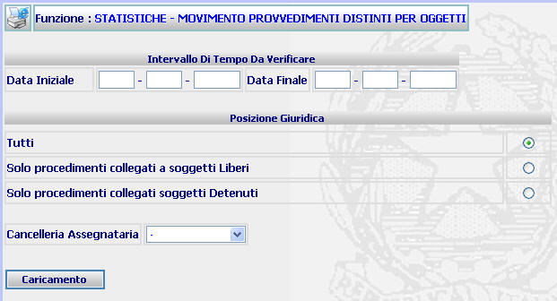
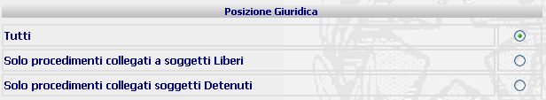
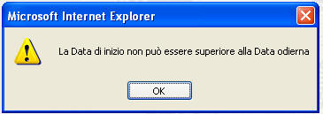
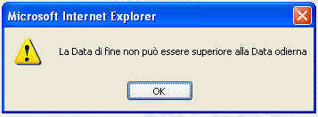

Selezionare l'intervallo temporale attraverso gli appositi campi
STATISTICHE - MOVIMENTO PROVVEDIMENTI DISTINTI PER OGGETTI: La funzione consente di operare ricerche statistiche relative al movimento dei procedimenti distinti per oggetti
LE MASCHERE VIDEO
La funzione viene realizzata attraverso la maschera seguente

COME FARE PER ...
Per selezionare l'intervallo temporale relativamente al quale si vuole ottenere il movimento dei procedimenti, l'utente deve
|
Selezionare l'intervallo temporale attraverso gli appositi campi |

|
Selezionare una delle posizioni giuridiche indicate (se ai fini della ricerca non è necessario operare tale distinzione, scegliere l'opzione "tutti"), selezionando il relativo radio button |

|
Selezionare, se necessario, la Cancelleria relativamente alla quale si vuole effettuare la ricerca, utilizzando l'apposita tendina |
|
Confermare i dati inseriti nella maschera agendo sul bottone . Il sistema presenta la funzione successiva, attraverso la quale è possibile selezionare l'oggetto interessato ed il tipo di estrazione |
CAMPI
I dati attraverso i quali è possibile effettuare la ricerca sono i seguenti:
| Data iniziale - Data finale | Campo (obbligatorio) attraverso il quale si inserisce l'intervallo temporale al quale si vuole limitare la ricerca. |
| Cancelleria Assegnataria | Campo attraverso il quale è possibile inserire, tramite l'apposita tendina, la Cancelleria Assegnataria alla quale si vuole limitare la ricerca. |
PULSANTI
E' presente il pulsante
 di stampa del contesto (videata)
di stampa del contesto (videata)
BOTTONI
Oltre ai comandi funzionali relativi al menù verticale sono presenti i seguenti comandi:
|
COMANDI |
DESCRIZIONE |
|
|
A fronte di tale comando, il sistema dopo aver verificato la validità dei dati specificati, presenta la maschera di Movimento provvedimenti distinti per soggetto - inserimento opzioni di estrazione |
CONTROLLI
A fronte della pressione del bottone , il sistema verifica che tutti i campi siano stati correttamente compilati e, nel caso in cui venga inserita una data di inizio o di fine periodo superiore alla data di sistema, verranno visualizzati i seguenti messaggi

